SmartTools アドオン解説書
SmartAnimation Suite（スマートアニメーション スイート） 解説書
版 1.0.0 ／ 2026年11月18日 ／ Blender 5.1.2 用
SmartAnimation Suite は、アニメーション作業でよく使う道具を 1 か所に集めたアドオンです。タイムラインの操作、タイミングの調整、揺れなどの効果のベイク、キーの整理、ポーズの控え、アクションと NLA の管理ができます。別のリグへ動きを写すこと（リターゲット）もできます。画面の見出しはどれも折りたたみ式です。結果は、キーフレーム・NLA ストリップ・ドライバー・テキストデータ・補助オブジェクトといった Blender の普通のデータとして残ります。そのため、後から手で直せます。
1. このアドオンでできること
キーフレームの作業を楽にする道具を、サイドバーの 1 つのタブにまとめたアドオンです。
- 今のファイルの状態（アクション、キー数、問題の数など）を調べて表示する
- キーの間の中割り（トゥイーン）や、ポーズの誇張（プッシュ / プル）を作る
- キーの挿入、マーカー、プレビュー範囲、再生の設定をタスクの一覧から選んで実行する
- キーの移動・拡縮・等間隔化、ステップのプレビュー、オーバーラップなどでタイミングを整える
- スプリング（揺れ）、物理、カメラの揺れ、ループ、ノイズなどの効果をキーにベイクする
- 密なキーの簡略化、重複キーや動かないチャンネルの削除、オイラーフィルターでカーブを整理する
- 選択状態やポーズを保存して、後で呼び戻す（選択セット・ポーズスナップショット）
- アクションを NLA へ送る、モーションライブラリに保存して並べる
- ボーンの対応表を作り、別のリグへ動きを写してベイクする
- 同梱しているアニメーション用のツール（Sakura PoseLib、AnimAll、Storytools、Camera Shakify など）を必要な時だけ読み込んで使う
- ブロッキング（大まかなポーズ付け）の後に、中割りやタイミングを整える
- モーションキャプチャーやベイクで密になったキーを、編集しやすい量に減らす
- よく使うポーズを控えておき、別のフレームやショットで呼び戻す
- 別の骨組みのキャラクターへ、同じ動きを写す
- 歩きや走りのたたき台を自動で作り、手で仕上げる
ひと目で分かる例
このアドオンを使うと、画面は次のように変わります。くわしい操作は 5 章の各機能の「実例」で説明します。
実例ボタン 1 つで、跳ねながら進む歩きのたたき台を作る（小さな立方体で試した様子）
選んだ物に、前へ進みながら上下に揺れる歩きのキーを作ります。できるのは普通のキーフレームなので、後から手で直せます。
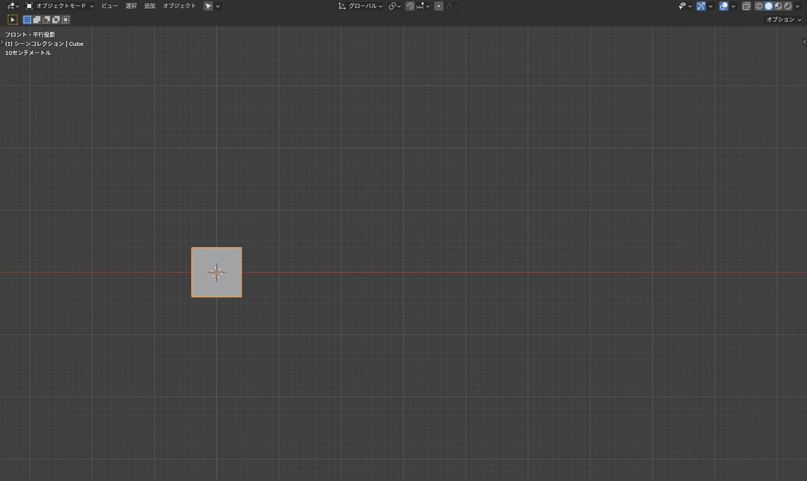
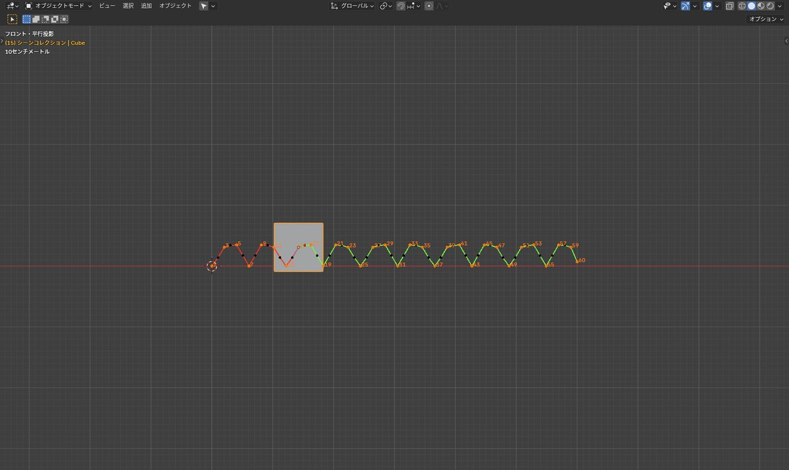
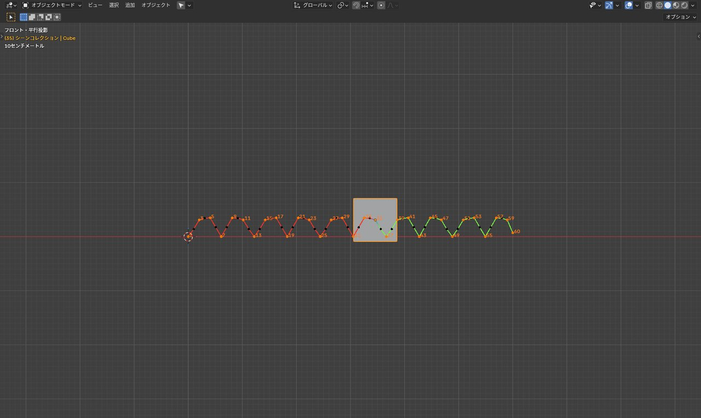
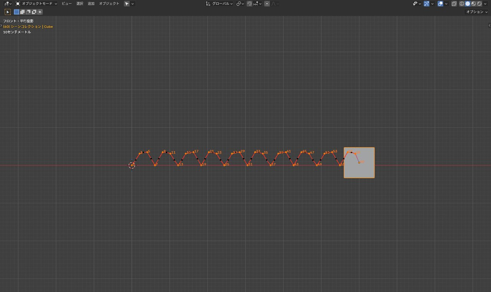
- 立方体を選び、シーンの終了フレームを 60 にします。
- Smart Animation タブの「アニメーション レシピ」にある「ロコモーション生成」の見出しを開き、「軸」を +X、「距離」を 6、「スタイル」を「ウォーク」、「上下」を 0.4 にします。
- 欄のいちばん下の「ロコモーション生成」ボタンを押します。
- 再生すると、立方体が上下に揺れながら右へ進みます。
見どころ：フレームが進むにつれて立方体が右へ進み、上下に揺れます。ジグザグの線（モーションパス）は、作られたキーが描く通り道です（この線はアドオンではなく、Blender のオブジェクトプロパティの「モーションパス」で計算すると出ます）。線は今のフレームより前が赤、後が緑で、点の横の数字はフレーム番号です。
実例跳ねる動きの軌跡と残像を出して、弧を確かめる（跳ねる立方体で試した様子）
キーのある物に、通り道の線（トレイル）と前後のコマの残像（ゴースト）を作ります。動きの弧や間隔が、1 枚の画面で分かります。
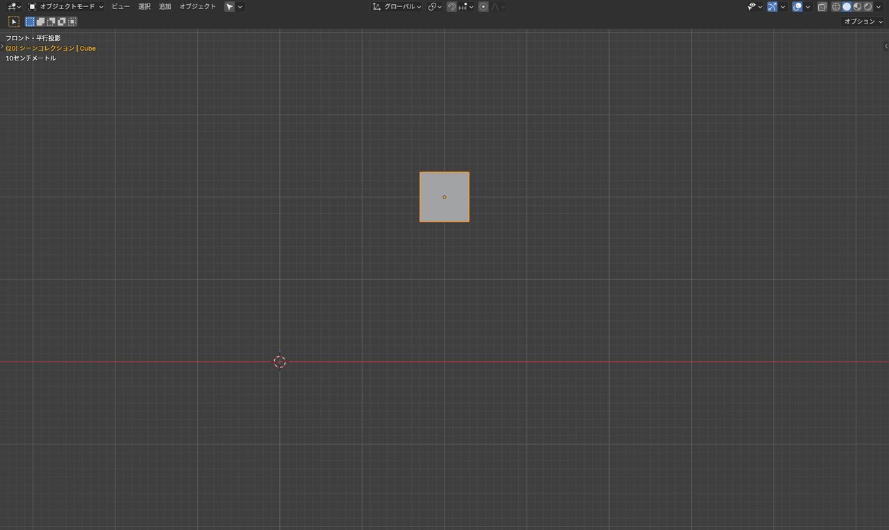

- キーを打った立方体を選びます。
- 「モーション可視化」で「モード」を「トレイル + ゴースト」にします。
- 「可視化ヘルパー作成」を押します。
見どころ：前は今のフレームの立方体しか見えません。後は、通り道の黒い曲線が出て、山なりの弧の形がひと目で分かります。弧のいちばん上にある今の立方体の左右には、前後のコマの位置に枠だけの残像が少しずつずれて重なっています。
2. 目玉の機能
このアドオンならではの機能を、図に番号を付けて説明します。図の中の番号と、図の下の一覧の番号が対応しています。図を押すと大きく表示されます。設定の一つ一つは 5 章の各見出しで説明します。
2-1. スタジオの最強統合ディレクターいちばんの売り
アニメーションの仕上げは、ふつうは診断・キーの整理・接地の直し・補間の調整・点検を、別々の道具で順に行います。スタジオの「最強統合ディレクター」は、事前診断から可視レビューまでの 7 段を 1 回の実行でまとめて行います。結果はキーフレームやテキストデータといった Blender の普通のデータで残るので、後から手で直せます。
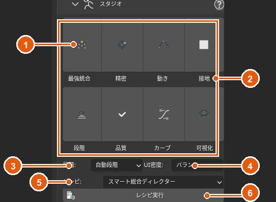
- 1最強統合のアイコン：アイコンのボタンは、押すだけでそれぞれの補助を実行する
- 2アイコン 8 個：最強統合・段階・精密・品質・動き・カーブ・接地・可視化
- 3段階（7 種）：自動段階・ブロッキング・スプライン・モーキャプ / リターゲット・物理 / オーバーラップ・最終ポリッシュ・レビュー
- 4UI密度：コンパクト・バランス・スタジオ。パネルに出す設定の量
- 5レシピ：まとめて行う処理の組。名前にお手本の製品名が入る物がある（例：Red9 / KineFX / MotionBuilder リターゲット）
- 6レシピ実行：選んだレシピを実行する
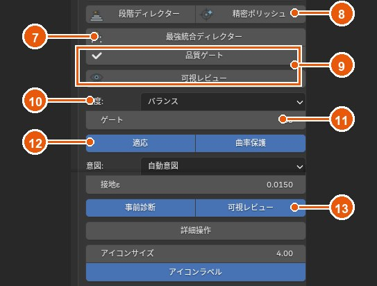
- 7最強統合ディレクター：事前診断・段階に合う処理・接地の安定化・タイミング意図・精密な整理・品質の点検・可視レビューの 7 段を 1 回で行う
- 8段階ディレクター / 精密ポリッシュ：段階に合う処理だけ、見た目を保ったキーの削減だけを単独で行う
- 9品質ゲート / 可視レビュー：品質の点検（結果はテキストデータ）と、動きの補助表示の作成を単独で行う
- 10精度（5 種）：ヒーロー・安全・バランス・モーキャプ整理・強め。整理の強さ
- 11ゲート：品質の点検で合格とする最低の点数
- 12適応 / 曲率保護：端や山・谷のキーを残して間を減らす整理と、強い曲がりや止めのキーを守る設定
- 13事前診断 / 可視レビュー：⑦ の前の軽い点検と、⑦ の後の補助表示を入れるか外すか
- サイドバー（N パネル）の「Smart Animation」タブで「スタジオ」を開く。
- ③ の段階を今の作業に合わせる。迷ったら「自動段階」にする。
- ⑩ の精度と ⑪ のゲートを決める。
- ⑦「最強統合ディレクター」を押す。
- 7 段のうち 1 つだけ行いたい時は、⑧ と ⑨ のボタンで単独に実行できる。
- ⑬ を切ると、事前診断と可視レビューを外して実行できる。
- ⑤ のレシピ名にある製品名は、お手本にした流れを示す名前。
- 結果はキーフレーム・テキストデータ・補助オブジェクトとして残るので、後から手で直せる。
くわしい設定：5-11. スタジオ
2-2. ロコモーション生成図で見る
歩きや走りのような繰り返しの動きを、キーを 1 つずつ打たずに作ります。進む向き・距離・周期・型を決めて押すだけで、選んだ物に前進と上下・左右の揺れのキーが打たれます。前と後の 2 枚は、立方体に「軸 +X・距離 6・ウォーク・上下 0.4」で作った例です（設定の図は初めの値のまま）。

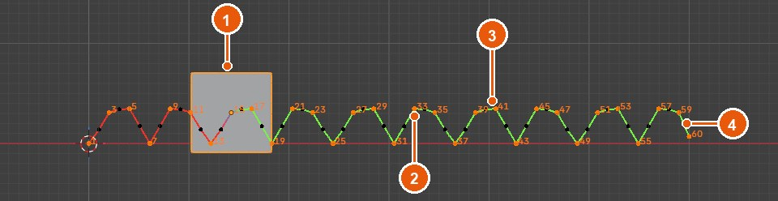
- 1立方体（フレーム 15）：今のフレームの位置
- 2通り道：今より前は赤、後は緑。数字はフレーム番号
- 3上下の揺れ：一歩ごとの上下。山と谷が交互に並ぶ
- 4進む向き：「軸」で決めた向き（ここでは +X）へ進む
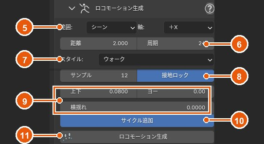
- 5範囲 / 軸：作るフレームの範囲と進む向き。範囲を自分で決める設定にすると「開始」「終了」が出る
- 6距離 / 周期：進む距離と、繰り返しの長さ
- 7スタイル：ウォーク・走り・機械的・シネマティック
- 8サンプル / 接地ロック：1 回の繰り返しに打つキーの数と、接地のあたりの上下を平らにするか
- 9上下 / ヨー / 横揺れ：上下・向き・横の揺れの量
- 10サイクル追加：作ったカーブに繰り返し用のモディファイアーを付ける
- 11ロコモーション生成：押すと、選んだ物に設定どおりのキーを打つ
- 動かす物を選ぶ。
- 「ロコモーション生成」の見出しを開き、⑤〜⑨ を決める。
- ずっと繰り返すなら ⑩ を入れ、⑪「ロコモーション生成」を押す。
- 図の線と数字は Blender のモーションパスの表示で、アドオンが作る物ではない。
- 打たれるのは普通のキーフレームなので、グラフエディターで手で直せる。
くわしい設定：5-17. ロコモーション生成
2-3. モーション可視化図で見る
動きの速さや弧の形は、再生しただけでは見落としがちです。「可視化ヘルパー作成」は、通り道の線（トレイル）や前後のコマの残像（ゴースト）をシーンに作り、動きの流れを 1 枚の画面で見せます。元のキーは変わりません。


- 1トレイル：通り道の線。弧の形が分かる
- 2ゴースト：前後のコマの残像
- 3今の立方体：今のフレームの本体
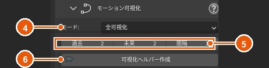
- 4モード（4 種）：全可視化・トレイル + ゴースト・モーションパス・弾道
- 5過去 / 未来 / 間隔：残像を前後に何コマ分出すかと、その間隔
- 6可視化ヘルパー作成：押すと補助をシーンに作る。元のキーは変わらない
- 動きのある物を選ぶ。
- 「モーション可視化」の見出しで ④ のモードと ⑤ を決める。
- ⑥「可視化ヘルパー作成」を押す。
- ゴーストの間が詰まった所は動きが遅く、空いた所は速い。タイミングの確かめに使える。
- トレイルがなめらかな弧になっていれば、跳ねる動きの軌道がきれいに通っている。
くわしい設定：5-14. モーション可視化
3. 準備
アドオンの入れ方・画面を日本語にする方法・N パネルと「？」ヘルプの共通の使い方は、「SmartTools 全体仕様書」にまとめています。先にそちらの 2〜5 章を読んでください。
| 入れる ZIP | SmartAnimationSuite_1.0.0.zip |
|---|---|
| Blender の画面での名前 | Smart Animation |
| 動く Blender | 5.1.2 |
4. 画面の場所
サイドバー（N パネル）の「Smart Animation」タブに出ます。3D ビューのほか、ドープシート、グラフエディター、NLA エディターなど、下に挙げたエディターのサイドバーにも同じタブが出ます。Smart Tools Manager を入れている時は、どのエディターに出すかがその置き場所の設定に従います。
| 出る画面 | 3D ビューポート、ドープシート、グラフエディター、NLA エディター、画像エディター（UV エディター）、ノードエディター、ビデオシーケンサー、動画クリップエディター、テキストエディター、ファイルブラウザー、スプレッドシート |
|---|---|
| タブ | Smart Animation |
| モード | オブジェクトモード（ポーズの道具はポーズモードで使います） |
- インストール、日本語化、N パネルの開き方、「？」ヘルプの共通の使い方は、全体仕様書の該当の章を見てください。
- 3D ビューのサイドバーを開き、右端のタブの中から「Smart Animation」を押します。
- いちばん上の「常時機能切り替え」の下にある「概要タスク」を開きます。
- 「タスク」で表示したい道具のまとまりを選びます。初めは「全機能」のままで構いません。
- 使いたい見出しの左の三角を押して開きます。

5. 機能の説明
画面の上から順に、見出しごとに説明します。見出しの右の「？」を押すと、同じ内容の説明が画面にも出ます。青い枠の「実例」は、スザンヌなどの簡単なモデルで実際に操作し、3D ビューでの変化を前と後で並べたものです。
5-1. 常時機能切り替え
裏で動き続ける機能（ショートカット、ヘッダーのボタン、画面への描画など）を、1 つずつ入れたり切ったりする欄です。同梱ツールの項目は、初めはどれも「無効」です。
場所Smart Animation タブのいちばん上の見出しです。
| 表示 | 働き |
|---|---|
| Nパネル状態保存 | この欄の切り替えなどを、Blender の設定フォルダーのファイルに保存する時期を決めます。「有効」だと変えたその場で保存します。「無効」だと、シーンを閉じる時か、プリファレンスを保存した時に保存します。初めは「有効」です。 |
| 同梱ツールの行 | 上の段に同梱ツールの名前、下の段に機能の名前が出ます（例：「Sakura PoseLib」の「ポーズライブラリ・ホットキー」、「Storytools」の「ミニマップ描画ハンドラー」、「Animation Transform Offset」の「トランスフォームオフセット・ホットキー」）。右のボタンを押すたびに「有効」と「無効」が切り替わります。 |
5-2. 概要タスク
このタブに何を表示するかを選ぶ見出しです。
場所「常時機能切り替え」のすぐ下です。
| 表示 | 働き |
|---|---|
| タスク | 「全機能」「アニメーション レシピ」「概要 / 診断」「アニメーションツール」「アセットツール」「転送ツール」と、同梱ツールのまとまり（「ポーズ」「キーデータ」「トランスフォーム」「タイミング」「カーブ」「カメラ」「ストーリーボード」）から選びます。「全機能」はすべての見出しを並べます。ほかを選ぶと、その見出しだけが出ます。 |
- 「概要タスク」の三角を押して開きます。
- 「タスク」の一覧から、使いたいまとまりを選びます。
5-3. 概要 / 診断
今のファイルの状態を確かめるための見出しです。作業や書き出しの前に、アクション（動きのデータ）が無い・範囲がおかしいなどの問題がないかを見ます。
場所「概要タスク」で「全機能」か「概要 / 診断」を選ぶと出ます。
| 表示 | 働き |
|---|---|
| 自動バックアップ | キーを消すような整理の前に、今のアクションを複製して控えを作ります。初めは有効です。 |
| プレビューのみ | 有効にすると、整理の道具はデータを変えず、いくつのキーやチャンネルが変わるかだけを知らせます。 |
| 安全ヒント | 危ない操作の近くに注意の文を出します。初めは有効です。「現在の検出結果」も、これが有効な時だけ出ます。 |
5-4. シーン要約
選んでいる物の状態を一覧で見る欄です。見るだけで、何も変えません。
場所「概要 / 診断」の中です。
| 表示 | 働き |
|---|---|
| オブジェクト / モード / アクション | 選んでいる物の名前、今のモード、使っているアクションの名前です。 |
| キー数 / F カーブ / マーカー / NLA トラック | キーフレームの数、動きのカーブの本数、マーカーの数、NLA のトラックの数です。 |
| 準備度 / 密度 / 問題数 | 作業を始められる度合い（%）、キーの込み具合、見つかった問題の数です。 |
| 一致ボーン / ライブ | リターゲットで対応が取れた骨の数と、今つながっている仮の写し（ライブリターゲット）の数です。 |
5-5. 現在のアクションスロット
選んでいる物に付けるアクションを、選んだり新しく作ったりする欄です。
場所「概要 / 診断」の中です。
| 表示 | 働き |
|---|---|
| アクションの欄 | 動きのデータがある物では、付けるアクションを選びます。新しく作ることもできます。 |
| アクション作成 | まだ動きのデータが無い物の時に出ます。押すと、選んでいる物に新しいアクションを作って付けます。 |
5-6. おすすめの次操作
今の状態から、次に何をすればよいかを文で案内します。
場所「概要 / 診断」の中です。
| 表示 | 働き |
|---|---|
| 案内の文 | 例：「開始するにはオブジェクトを選択してください。」「密なアニメーションを整理する前に、整理プレビューで影響を確認してください。」のように、足りない準備や次の手を知らせます。アクションの無い物を選んでいる時は、アクションを作るか割り当てて、タスク「アニメーションツール」のタイムラインハブでキー作業を始めるよう案内します。止まる要因がある時は、「現在の検出結果」を見るよう案内します。文が長い時は折り返して表示されます。 |
5-7. 現在の検出結果
見つかった問題（アニメーションデータが無い、プレビュー範囲がおかしいなど）を並べます。
場所「概要 / 診断」の中です。問題があり、「安全ヒント」が有効な時だけ出ます。
| 表示 | 働き |
|---|---|
| 問題の行 | 赤い行は、先に直す必要がある問題です。三角の印の行は、確かめておくとよい注意です。 |
5-8. 概要アクション
診断・修復・記録をボタン 1 つで行う欄です。
場所「概要 / 診断」の中です。
| 表示 | 働き |
|---|---|
| スマートアシスト | 今のシーンを調べ、作業に合うタスクへパネルの表示を切り替え、理由をメッセージで知らせます。アニメーションデータは変わりません。 |
| 自動修復 | 押すと、アクションが無い、プレビュー範囲がおかしいなど、よくある設定の問題を直します。 |
| 監査 | 押すと、編集や書き出しの前に確かめるべき問題を調べます。 |
| レポート書き出し | シーンの要約と診断の結果を、Blender のテキストデータに書き出します。 |
| ログをクリア | 「操作ログ」の古いメッセージを消します。 |
実例今の状況に合う道具のまとまりへ、パネルを切り替えてもらう（キーの無い立方体で試した様子）
「スマートアシスト」は今のシーンを調べ、作業に合うタスクへパネルの表示を切り替えます。アニメーションのデータは変わりません。
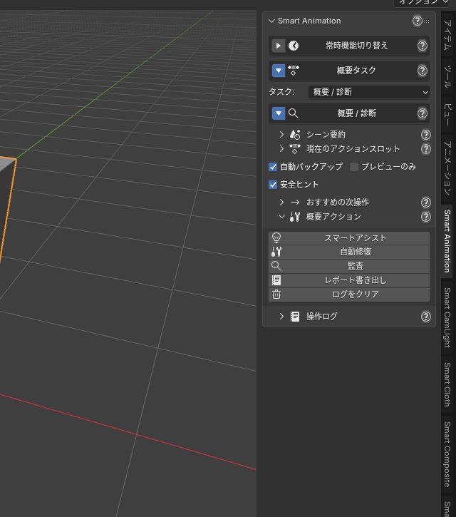
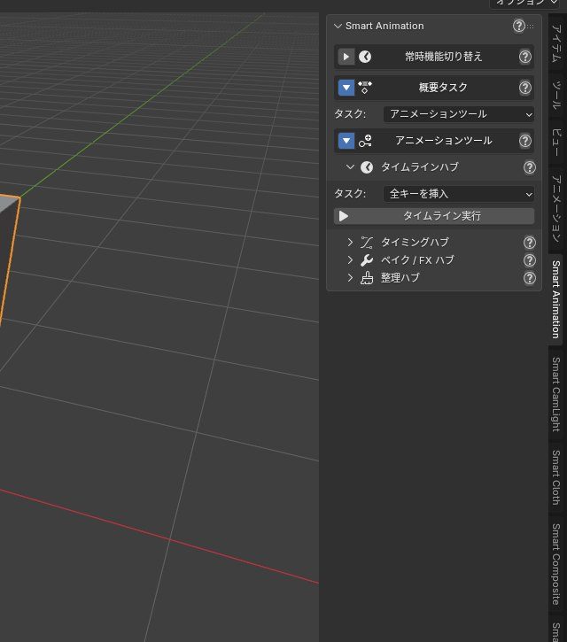
- キーの無い立方体を選びます。
- 「概要タスク」の「タスク」を「概要 / 診断」にします。
- 「概要アクション」の「スマートアシスト」を押します。
見どころ：サイドバーの「タスク」が「概要 / 診断」から「アニメーションツール」に変わります。「アニメーションツール」の見出しを開くと、キー打ちを始める「タイムラインハブ」があります。切り替えた理由は、画面の下のメッセージで知らせます。
5-9. 操作ログ
このアドオンが最近行った操作の記録、警告、エラーを見る欄です。
場所「概要 / 診断」の中です。
| 表示 | 働き |
|---|---|
| ログ保持数 | 残しておく記録の数です。 |
| クリア | 押すと、記録を消します。 |
| 情報 / 警告 / エラー | それぞれの記録の数です。 |
5-10. アニメーション レシピ
いくつもの手順をまとめて行う、上級の補助の見出しです。中割り、カーブの整理、接地の安定化、物理、歩きの生成、リターゲットなどがあります。
場所「概要タスク」で「全機能」か「アニメーション レシピ」を選ぶと出ます。
| 表示 | 働き |
|---|---|
| スタジオ | 大きなアイコンのボタンと、レシピの実行をまとめた見出しです。 |
| モーションディレクター ほか | 下に、目的ごとの細かい見出しが並びます。「UI密度」が「コンパクト」の時は、「詳細操作」を有効にしないと出ません。 |
5-11. スタジオ
よく使う補助を、大きなアイコンのボタンで押せるようにした操作盤です。
場所「アニメーション レシピ」の中の最初の見出しです。
| 表示 | 働き |
|---|---|
| アイコンのボタン（最強統合・段階・精密・品質・動き・カーブ・接地・可視化） | それぞれの補助を 1 回押すだけで実行します。 |
| 段階 | 作業の段階（「自動段階」「ブロッキング」「スプライン」「モーキャプ / リターゲット」「物理 / オーバーラップ」「最終ポリッシュ」「レビュー」）を選びます。 |
| UI密度 | 「コンパクト」「バランス」「スタジオ」から、パネルに出す設定の量を選びます。初めは「バランス」です。 |
| レシピ / レシピ実行 | まとめて行う処理（レシピ）を選び、「レシピ実行」を押すと実行します。名前には、お手本にした製品の名前がそのまま入っている物があります（例：「Red9 / KineFX / MotionBuilder リターゲット」）。 |
| 最強統合ディレクター | 品質の事前診断、段階に合う処理、接地の安定化、タイミング意図の適用、精密な整理、品質の点検、可視レビューを 1 回でまとめて行います。 |
| 段階ディレクター / 精密ポリッシュ / 品質ゲート / 可視レビュー | 段階に合う処理、見た目を保ったキーの削減、品質の点検（結果はテキストデータに書き出します）、動きの補助表示の作成を、それぞれ単独で行います。 |
| 精度 / ゲート | 整理の強さ（「ヒーロー」「安全」「バランス」「モーキャプ整理」「強め」）と、品質の点検で合格とする最低の点数です。 |
| 適応 / 曲率保護 | 端や山・谷のキーを残しながら間のキーを減らす整理と、強い曲がりや止めのキーを守る設定です。 |
| 意図 / 接地ε | 補間の付け方の意図と、接地を見つける時の高さの許容量です。 |
| 事前診断 / 可視レビュー / 詳細操作 | 実行前の軽い点検、最強統合ディレクターの後の補助表示、細かい見出しの表示を切り替えます。 |
| アイコンサイズ / アイコンラベル | アイコンのボタンの大きさと、下の文字を出すかを決めます。 |
5-12. モーションディレクター
今のフレームに、前後のキーから中割りを作ったり、ポーズを強めたり弱めたりします。
場所「アニメーション レシピ」の中です。
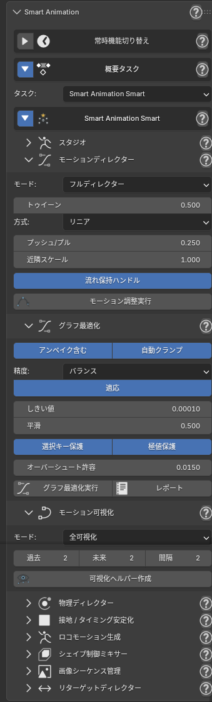
| 表示 | 働き |
|---|---|
| モード | 「フルディレクター」「トゥイーンのみ」「プッシュ/プルのみ」「近隣基準スケールのみ」から、行う処理を選びます。 |
| トゥイーン / 方式 | 中割りを前後のどちらのポーズに寄せるかと、その作り方です。0.0 で前のキー、1.0 で次のキーと同じになります。 |
| プッシュ/プル / 近隣スケール | ポーズの誇張の強さと、前後のキーを基準にした拡大の強さです。 |
| 流れ保持ハンドル | 処理の後、ハンドルを行き過ぎにくい形にそろえて、流れを保ちます。 |
| モーション調整実行 | 押すと、今のフレームに「モード」の処理をしたキーを打ちます。 |
- キーのあるポーズとポーズの間に、再生ヘッド（今のフレーム）を置きます。
- 「モード」と「トゥイーン」を決めます。
- 「モーション調整実行」を押します。
実例2 つのポーズの間に、終わり寄りの中割りを作る（立方体（左の枠が前のキー、右の枠が次のキー）で試した様子）
前後のキーの間に再生ヘッドを置き、「トゥイーン」の値で中割りのキーを作ります。0.5 なら真ん中、1 に近いほど次のキーに寄ります。
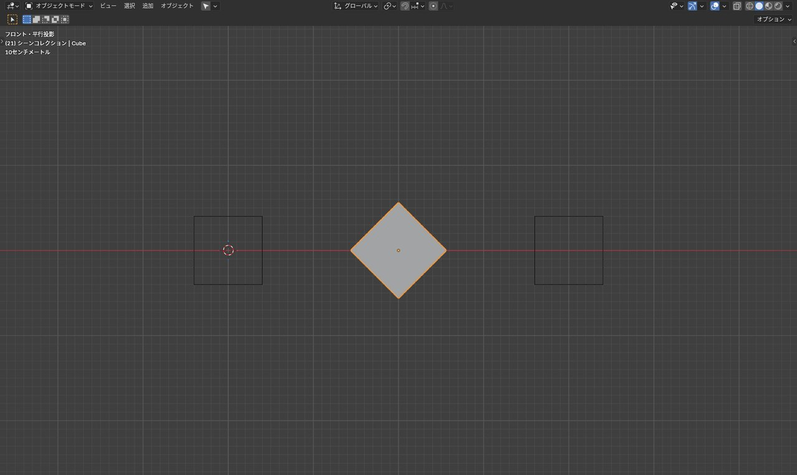
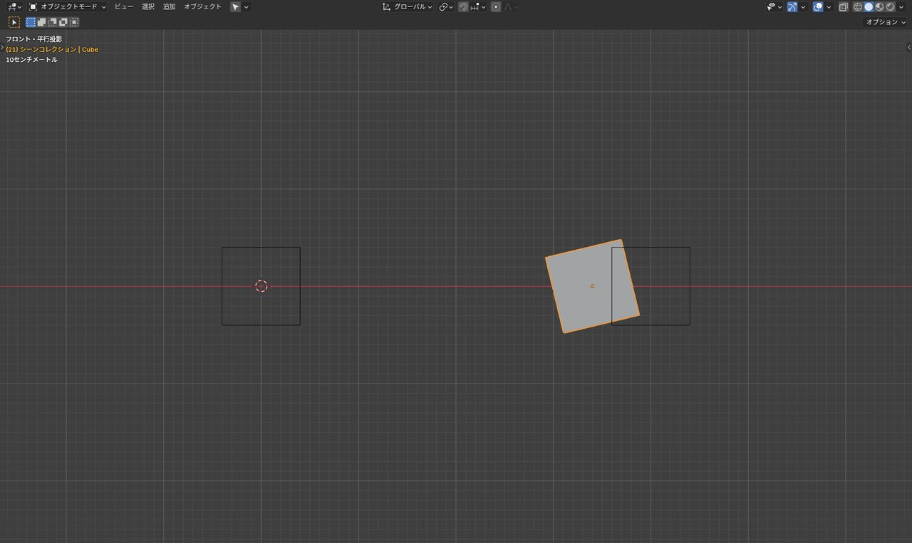
- フレーム 1 と 41 にキーのある立方体を選び、再生ヘッドをフレーム 21 に置きます。
- 「モーションディレクター」の「モード」を「トゥイーンのみ」、「トゥイーン」を 0.85 にします。
- 「モーション調整実行」を押します。
見どころ：前は、フレーム 21 で立方体が 2 つの枠のちょうど真ん中にあり、半分（45 度）だけ回っています。後は、新しい中割りのキーで右の枠（次のキー）の近くまで進み、回り方も次のキーの向きに近づいています。
5-13. グラフ最適化
動きのカーブ（F カーブ）をまとめて整理します。オイラーのずれの補正、重複や動かないチャンネルの整理、なめらかにする処理を組み合わせます。
場所「アニメーション レシピ」の中です。
| 表示 | 働き |
|---|---|
| アンベイク含む / 自動クランプ | 密なキーを減らす処理（スマートアンベイク）を含めるかと、ハンドルを行き過ぎにくい形にするかです。 |
| 精度 / 適応 | 整理の強さと、見た目を保ったキーの削減です。 |
| しきい値 / 平滑 | 同じと見なす差の大きさと、なめらかにする強さです。 |
| 選択キー保護 / 極値保護 | 選んだキーと、山・谷のキーを消さずに残します。 |
| オーバーシュート許容 | 品質の点検で、カーブの行き過ぎをどこまで許すかです。 |
| グラフ最適化実行 / レポート | 「グラフ最適化実行」を押すと、カーブを整理します。「レポート」を押すと、品質の点検結果をテキストデータに書き出します。 |
5-14. モーション可視化
動きの軌跡、前後のコマの残像（ゴースト）、モーションパス、放物線の目安を作り、動きの形を目で確かめます。
場所「アニメーション レシピ」の中です。
| 表示 | 働き |
|---|---|
| モード | 「全可視化」「トレイル + ゴースト」「モーションパス」「弾道」から、作る補助を選びます。 |
| 過去 / 未来 / 間隔 | 残像を前後に何コマ分出すかと、その間隔です。 |
| 可視化ヘルパー作成 | 押すと、「モード」に合う補助（通り道の線、残像の物、モーションパス、放物線の目安）をシーンに作ります。元のキーは変わりません。 |
実例跳ねる動きの軌跡と残像を出して、弧を確かめる（跳ねる立方体で試した様子）
キーのある物に、通り道の線（トレイル）と前後のコマの残像（ゴースト）を作ります。動きの弧や間隔が、1 枚の画面で分かります。
- キーを打った立方体を選びます。
- 「モーション可視化」で「モード」を「トレイル + ゴースト」にします。
- 「可視化ヘルパー作成」を押します。
見どころ：前は今のフレームの立方体しか見えません。後は、通り道の黒い曲線が出て、山なりの弧の形がひと目で分かります。弧のいちばん上にある今の立方体の左右には、前後のコマの位置に枠だけの残像が少しずつずれて重なっています。
5-15. 物理ディレクター
ジャンプの放物線、接地、揺れ、剛体の計算を、手で直せるキーにします。
場所「アニメーション レシピ」の中です。
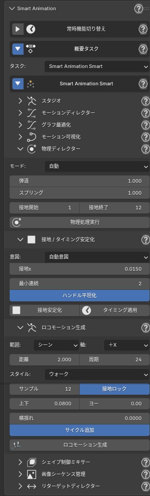
| 表示 | 働き |
|---|---|
| モード | 「自動」「弾道ガイド」「弾道ベイク」「支点 / 接地」「ばね」「リジッドボディ」から選びます。 |
| 弾道 / スプリング | 元の動きに放物線や揺れの結果をどれだけ混ぜるかです。0 で元のまま、1 で計算の結果そのものになります。 |
| 接地開始 / 接地終了 | 接地として扱うフレームの範囲です。 |
| 物理処理実行 | 押すと、「モード」の処理を行い、結果を手で直せるキーや補助として残します。 |
5-16. 接地 / タイミング安定化
足などが床に着いている所を見つけて高さをそろえ、補間の付け方を動きの意図に合わせます。
場所「アニメーション レシピ」の中です。
| 表示 | 働き |
|---|---|
| 意図 / 接地ε | 補間の意図と、接地を見つける高さの許容量です。大きくすると多くの接地を拾い、小さくすると離れる動きを平らにしにくくなります。 |
| 最小連続 / ハンドル平坦化 | 接地とみなす、続けて並ぶキーの最少の数と、接地中のハンドルを平らにするかです。 接地判定は続けて並ぶキー群を対象にします。間隔の大きいキーだけでは接地を検出しないため、必要なら動きをベイクしてから使用します。 |
| 接地安定化 / タイミング適用 | 「接地安定化」を押すと、接地の高さをそろえます。「タイミング適用」を押すと、「意図」に合う補間をキーに当てます。 |
5-17. ロコモーション生成
選んだ物に、歩きや走りのような繰り返す移動のたたき台を作ります。結果は普通のキーフレームです。
場所「アニメーション レシピ」の中です。
| 表示 | 働き |
|---|---|
| 範囲 / 軸 | 作るフレームの範囲と、進む向きです。範囲を自分で決める設定にすると「開始」「終了」が出ます。 |
| 距離 / 周期 / スタイル | 進む距離、繰り返しの長さ、動きの型（「ウォーク」「走り」「機械的」「シネマティック」）です。 |
| サンプル / 接地ロック | 1 回の繰り返しに打つキーの数と、接地のあたりの上下の動きを平らにするかです。 |
| 上下 / ヨー / 横揺れ | 上下の揺れ、向きの揺れ、横の揺れの量です。 |
| サイクル追加 | 作ったカーブに、繰り返し用のモディファイアーを付けます。 |
| ロコモーション生成 | 押すと、選んだ物に設定どおりのキーを打ちます。 |
実例ボタン 1 つで、跳ねながら進む歩きのたたき台を作る（小さな立方体で試した様子）
選んだ物に、前へ進みながら上下に揺れる歩きのキーを作ります。できるのは普通のキーフレームなので、後から手で直せます。
- 立方体を選び、シーンの終了フレームを 60 にします。
- Smart Animation タブの「アニメーション レシピ」にある「ロコモーション生成」の見出しを開き、「軸」を +X、「距離」を 6、「スタイル」を「ウォーク」、「上下」を 0.4 にします。
- 欄のいちばん下の「ロコモーション生成」ボタンを押します。
- 再生すると、立方体が上下に揺れながら右へ進みます。
見どころ：フレームが進むにつれて立方体が右へ進み、上下に揺れます。ジグザグの線（モーションパス）は、作られたキーが描く通り道です（この線はアドオンではなく、Blender のオブジェクトプロパティの「モーションパス」で計算すると出ます）。線は今のフレームより前が赤、後が緑で、点の横の数字はフレーム番号です。
5-18. シェイプ制御ミキサー
シェイプキーを動かすためのつまみ（カスタムプロパティ）を作り、シェイプキーとつなぎます（ドライバー）。
場所「アニメーション レシピ」の中です。
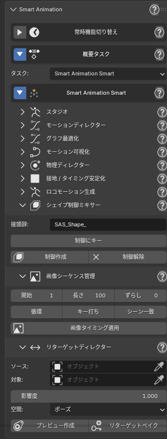
| 表示 | 働き |
|---|---|
| 接頭辞 | 作るつまみの名前の頭に付ける文字です。 |
| 制御にキー | 作ったつまみに、今のフレームでキーを打ちます。 |
| 制御作成 / 制御解除 | 「制御作成」を押すと、選んでいるメッシュの Basis 以外のシェイプキーごとにつまみを作ります。「制御解除」を押すと、つなぎ（ドライバー）を外し、シェイプキーの値は今の値のまま残します。 |
5-19. 画像シーケンス管理
選んだ物に使われている連番画像のテクスチャの、再生の始まり・長さ・ずらしを決めます。
場所「アニメーション レシピ」の中です。
| 表示 | 働き |
|---|---|
| 開始 / 長さ / ずらし | 再生の始まり、使う枚数、ずらすコマ数です。 |
| 循環 / キー打ち / シーン一致 | 繰り返し再生にするか、「ずらし」に今のフレームでキーを打つか、シーンの範囲に合わせるかです。 |
| 画像タイミング適用 | 押すと、選んだ物の連番画像テクスチャの再生の始まり・長さ・ずらしを、この設定に書き換えます。 |
5-20. リターゲットディレクター
別のリグの動きを、仮のつなぎ（コンストレイント）で写して確かめ、よければキーにします。
場所「アニメーション レシピ」の中です。
| 表示 | 働き |
|---|---|
| ソース / 対象 | 動きの元のアーマチュアと、写す先のアーマチュアです。 |
| 影響度 / 空間 | 写す強さと、どの座標（「ポーズ」「ワールド」）で写すかです。 |
| プレビュー作成 / リターゲットベイク | 「プレビュー作成」を押すと、仮の写しを作ります。よければ「リターゲットベイク」を押すと、写す先のリグにキーとして焼き付けます。 |
5-21. アニメーションツール
毎日の作業で使う道具の見出しです。タイムライン、タイミング、効果のベイク、整理があります。
場所「概要タスク」で「全機能」か「アニメーションツール」を選ぶと出ます。
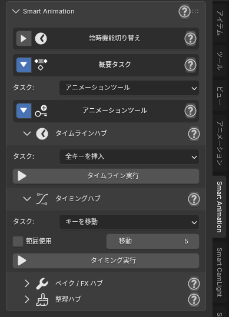
| 表示 | 働き |
|---|---|
| 中の見出し | 「タイムラインハブ」「タイミングハブ」「ベイク / FX ハブ」「整理プレビュー」「整理ハブ」が並びます。「整理プレビュー」は、アクションがあり、「整理ハブ」で整理のタスクを選んでいる時だけ出ます。どれも「タスク」で行う作業を選び、出てきた設定を決めてから実行します。 |
5-22. タイムラインハブ
キーの挿入、マーカー、プレビュー範囲、再生の設定、カメラのショットの並べ方を扱います。
場所「アニメーションツール」の中です。
| 表示 | 働き |
|---|---|
| タスク | 「新規アクション」「アクションを複製」「全キーを挿入」「位置キーを挿入」「ビジュアル範囲ベイク」「シェイプキー: 全て」「マーカーを追加」「選択キーをマーク」「キーからプレビュー範囲設定」「プレビュー解除」「再生: ブロッキング」「再生: レビュー」「再生: リップシンク」「カメラシーケンス」「デュアルビュー確認」などから選びます。 |
| タスクごとの設定 | 選んだタスクに合わせて、「マーカー名」「範囲」「間隔」「ショット長」「方向」「比率」「カメラ固定」や、「オートキー」「プレビュー範囲を使用」などが出ます。 |
| タイムライン実行 | 押すと、選んだタスクを実行します。たとえば「全キーを挿入」なら、今のフレームに位置・回転・スケールのキーを打ちます。 |
実例案内どおりにキーを打ち、シーン要約の数字が増えるのを見る（キーの無い立方体で試した様子）
「おすすめの次操作」の案内どおりに、タイムラインハブでキーを打ちます。結果は「シーン要約」の数字で確かめられます。
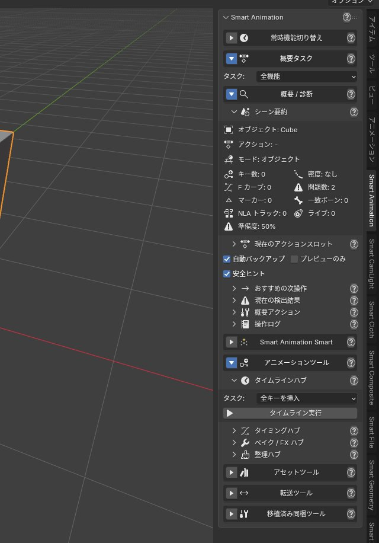
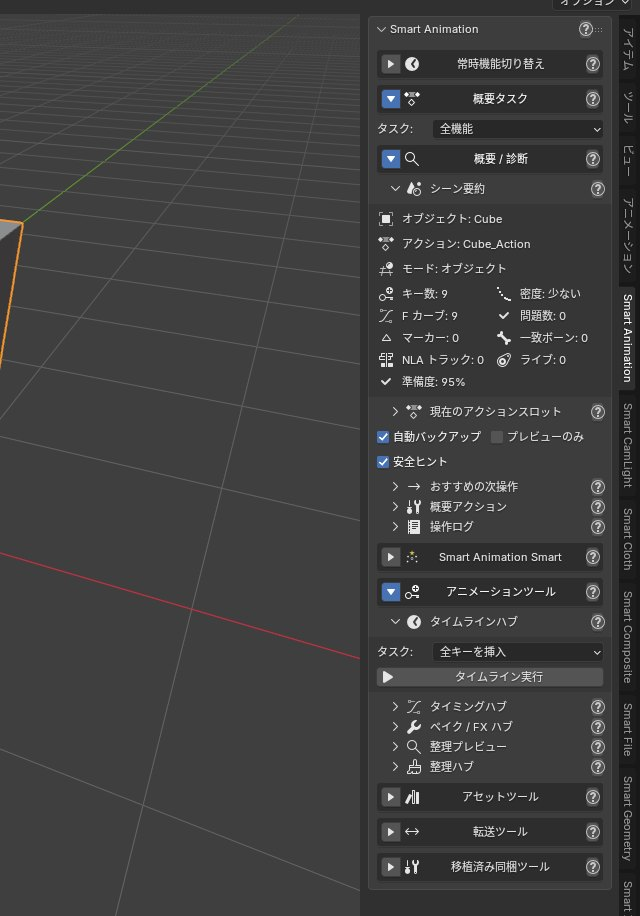
- キーの無い立方体を選びます。「タスク」は「全機能」にします。
- 「アニメーションツール」の「タイムラインハブ」で「タスク」を「全キーを挿入」にします。
- 「タイムライン実行」を押します。
見どころ：「シーン要約」の「キー数」と「F カーブ」が 0 から 9 に増え、「アクション」の欄にアクションの名前が出ます。位置・回転・スケールの 3 つずつ、合わせて 9 本のカーブにキーが入ります。「問題数」も 0 になります。
5-23. タイミングハブ
キーの時間をずらす・縮める・等間隔にするほか、中割り、接地のホールド、ステップのプレビュー、オーバーラップなどを扱います。
場所「アニメーションツール」の中です。
| 表示 | 働き |
|---|---|
| タスク | 「キーを移動」「タイミング拡縮」「等間隔タイミング」「トゥイーン」「プッシュ / プル」「隣接キー基準で拡縮」「コンタクトホールド」「ステッププレビュー」「オーバーラップ処理」「カスケード遅延」「タイミングをランダム化」「自動フルクラム」から選びます。 |
| 範囲使用 / 開始 / 終了 | 「キーを移動」「タイミング拡縮」「等間隔タイミング」の時に出ます。決めたフレームの範囲だけに処理します。 |
| タスクごとの設定 | 「移動」「倍率」「ピボット」「係数」「遅延」「シード」「最小」「最大」などが出ます。 |
| タイミング実行 | 押すと、選んだタスクを実行します。「コンタクトホールド」ではボタンが「キーから範囲」と「適用」に、「ステッププレビュー」では「プレビュー」「ステップキー」「クリア」に変わります。 |
5-24. ベイク / FX ハブ
コマ打ち風、揺れ、物理、カメラの揺れ、ループ、ノイズなどの効果を作り、手で直せるキーにします。
場所「アニメーションツール」の中です。
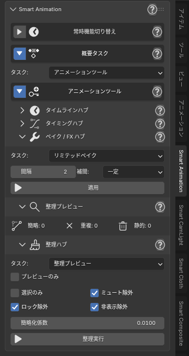
| 表示 | 働き |
|---|---|
| タスク | 「リミテッドベイク」「スプリングダイナミクス」「Spring Magic」「物理ベイク」「モーションシグナル」「モーションストレッチ」「車両ドライブ」「変形リビール」「デフォーマーリビール」「トレイルカーブ」「ゴーストプレビュー」「弾道ガイド」「弾道ベイク」「カメラシェイク」「ループ補助」「ノイズモディファイア」「モーションパス」「ダイナミック親子付け」「グローバルコピー」「グローバル貼り付け」から選びます。 |
| タスクごとの設定 | 例として「リミテッドベイク」では「間隔」「補間」、「スプリングダイナミクス」では「剛性」「減衰」「ブレンド」、「モーションストレッチ」では「軸」「平面」「強さ」「スクワッシュ」「最大」、「Spring Magic」では「軸」「衝突」「半径」などが出ます。 同じ向きに伸びた直線状のチェーンでは、各節が親の移動を引き継ぎ、長さに比例した動きになる場合があります。必ず節ごとに遅れが見える機能ではありません。 |
| 適用 / クリア | 「適用」を押すと、効果を作ります。補助を作るタスクでは「クリア」も出て、押すと作った物を消します。 |
実例速く動く所だけ、進む向きに伸ばす（右へ素早く動く立方体で試した様子）
「モーションストレッチ」は、動きの速さに合わせて物を進む向きへ伸ばすキーを作ります。アニメの「スミア（ぶれの伸び）」のような見た目になります。
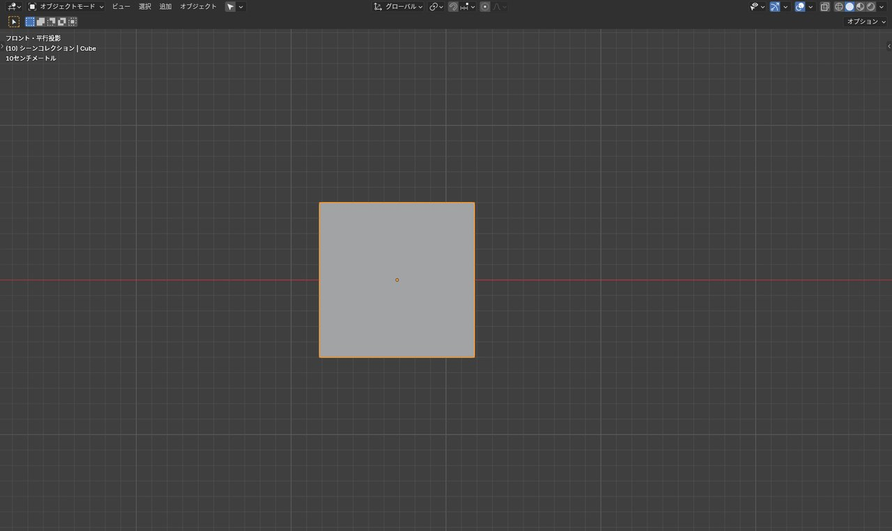
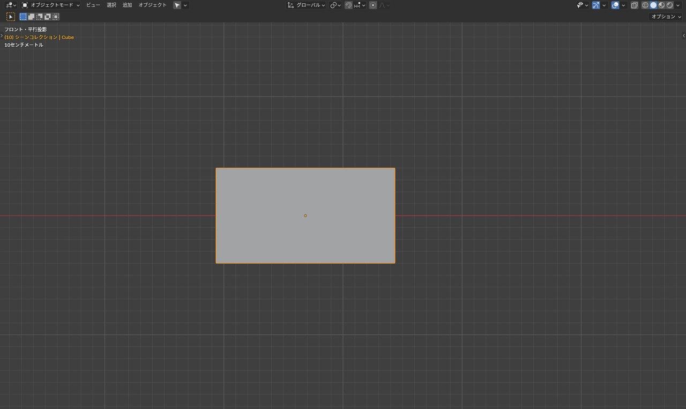
- キーで動かした立方体を選びます。
- 「ベイク / FX ハブ」の「タスク」を「モーションストレッチ」にし、「軸」を X、「強さ」を 0.8、「最大」を 3 にします。
- 「適用」を押します。
見どころ：同じフレームの同じ立方体が、後の図では左右に長く伸び、上下と奥行きは少し細くなります。止まっている時や遅い時は、元の形に近いままです。
5-25. 整理プレビュー
整理を行う前に、どれだけのキーやチャンネルが消えるかの見積もりを見ます。
場所「アニメーションツール」の中、「整理ハブ」の上です。アクションがあり、「整理ハブ」の「タスク」が「整理プレビュー」「カーブ簡略化」「重複の削除」「静的チャンネル削除」の時だけ出ます。
| 表示 | 働き |
|---|---|
| 簡略 / 重複 / 静的 | 簡略化で減るキー、重複したキー、動かないチャンネルの数です。 |
5-26. 整理ハブ
カーブの簡略化、なめらかにする処理、重複キーや動かないチャンネルの削除、オイラーフィルター、作った補助の削除を扱います。
場所「アニメーションツール」の中です。
| 表示 | 働き |
|---|---|
| タスク | 「整理プレビュー」「カーブ簡略化」「カーブをスムーズ化」「重複の削除」「静的チャンネル削除」「スマートアンベイク」「オイラーフィルター」「タンジェントプリセット」「シェイプスムーズ」「シェイプ最適化」「ステッププレビュー解除」「トレイル解除」「ゴースト解除」などから選びます。 |
| プレビューのみ | データを変えずに、変わる量だけを知らせます。 |
| 選択のみ / ロック除外 / ミュート除外 / 非表示除外 | 処理する F カーブを絞ります。 |
| 簡略化係数 / しきい値 / 係数 / 反復 / 許容値 | タスクに合わせて出る、処理の強さの設定です。 |
| 整理実行 | 押すと、選んだタスクを実行します。たとえば「カーブ簡略化」なら、形を保てる範囲で中間のキーを消します。 |
実例密なキーを、形を保ったまま減らす（毎フレームにキーのある立方体（グラフエディター）で試した様子）
「カーブ簡略化」は、なくても形が変わらない中間のキーを消します。ベイクやモーションキャプチャーで密になったカーブを、手で直せる量にします。
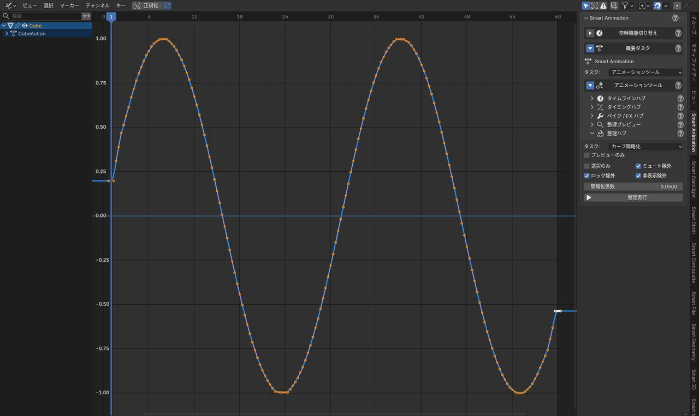
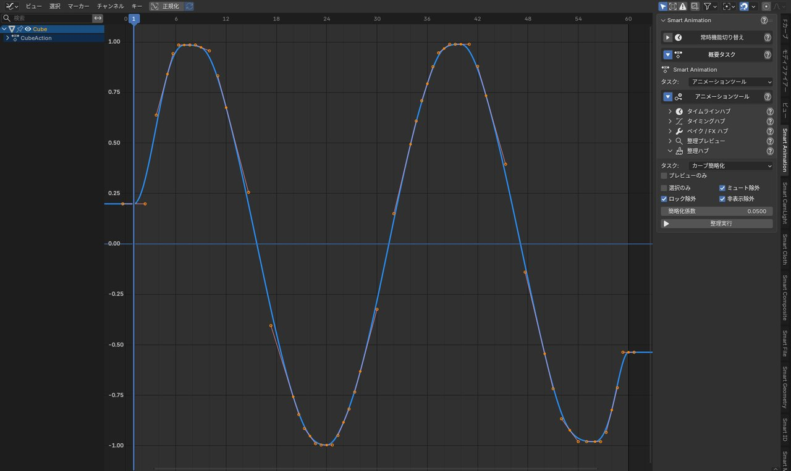
- 毎フレームにキーのある物を選び、グラフエディターを開きます。
- 「アニメーションツール」の「整理ハブ」で「タスク」を「カーブ簡略化」にし、「簡略化係数」を 0.05 にします。
- 「整理実行」を押します。
見どころ：カーブの上にびっしり並んでいた 60 個のキーが、20 個に減ります。キーから細い線で伸びた先の丸はハンドルで、キーの数には入りません。線の形はおおよそ保たれます。「自動バックアップ」が有効なので、元のアクションは控えとして残ります。
5-27. アセットツール
くり返し使う選択状態、ポーズ、アクションを保存して使い回す見出しです。
場所「概要タスク」で「全機能」か「アセットツール」を選ぶと出ます。
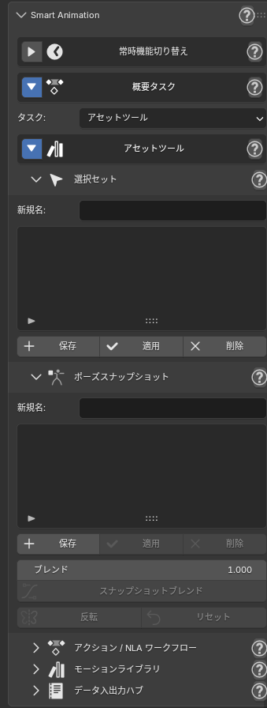
| 表示 | 働き |
|---|---|
| 中の見出し | 「選択セット」「ポーズスナップショット」「アクション / NLA ワークフロー」「モーションライブラリ」「データ入出力ハブ」が並びます。 |
5-28. 選択セット
オブジェクトやポーズボーンの選択状態を、名前を付けて保存し、後で同じ選択に戻します。
場所「アセットツール」の中です。
| 表示 | 働き |
|---|---|
| 新規名 | 保存するセットの名前です。 |
| セットの一覧 | 保存したセットが並びます。 |
| 保存 / 適用 / 削除 | 今の選択を保存する、選んだセットの選択に戻す、セットを消す、の 3 つです。 |
5-29. ポーズスナップショット
今のポーズを控えて、後で呼び戻したり、今のポーズと混ぜたりします。
場所「アセットツール」の中です。
| 表示 | 働き |
|---|---|
| 新規名 | 控えるポーズの名前です。 |
| スナップショットの一覧 | 控えたポーズが並びます。 |
| 保存 / 適用 / 削除 | 今のポーズを控える、選んだポーズに戻す、控えを消す、の 3 つです。「保存」は選んでいる骨を、何も選んでいない時はすべての骨を控えます。 |
| ブレンド / スナップショットブレンド | 控えたポーズを、どれだけ混ぜるかを決めて当てます。1.0 で控えたポーズそのものになります。 |
| 反転 / リセット | 「反転」は選んでいる骨のポーズを左右反転します（.L・.R のような左右の名前の骨で使います）。「リセット」は選んでいる骨の位置・回転・拡大を初期の値に戻します。 |
- アーマチュアを選び、ポーズモードにします。
- 「新規名」に名前を入れて「保存」を押します。
- 後で一覧から選び、「適用」を押すと、そのポーズに戻ります。
実例控えたポーズを半分だけ混ぜる・そのまま戻す（骨 4 本で動くスザンヌで試した様子）
体を曲げたポーズを「保存」で控えておき、後で「スナップショットブレンド」で半分だけ混ぜたり、「適用」でそのまま戻したりします。
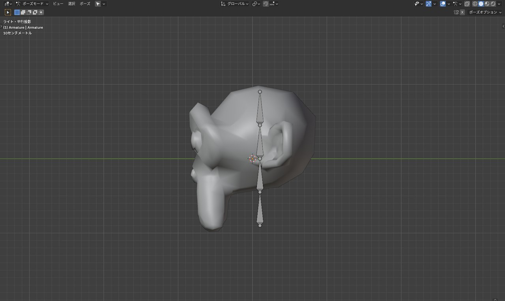
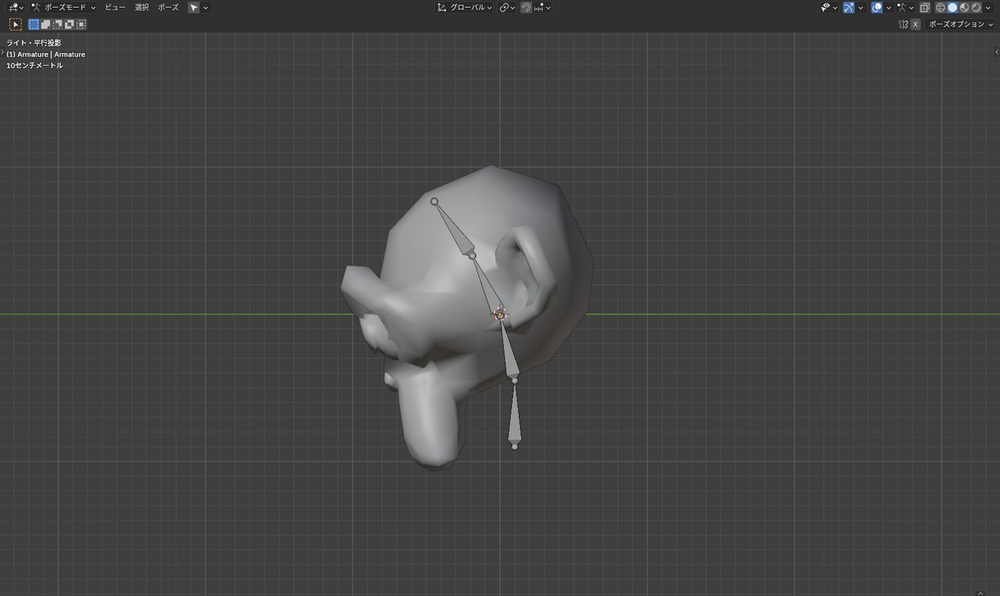
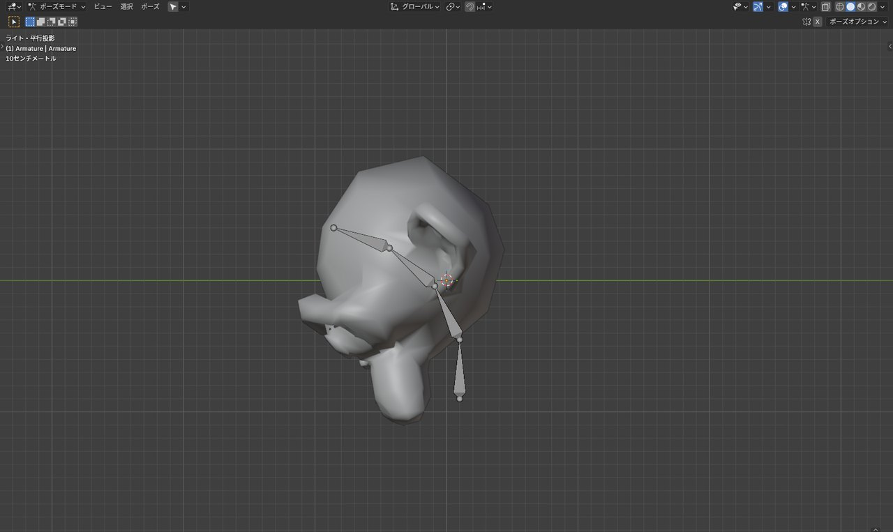
- アーマチュアを選び、ポーズモードで体を曲げます。
- 「ポーズスナップショット」の「新規名」に「おじぎ」と入れ、「保存」を押します。
- ポーズを元に戻した後、「ブレンド」を 0.5 にして「スナップショットブレンド」を押します。
- 「適用」を押すと、控えたポーズそのものに戻ります。
見どころ：「スナップショットブレンド」0.5 では曲がり方が半分ほどになり、「適用」では控えた時と同じだけ前へ曲がります。骨の線の傾きを比べると違いが分かります。
5-30. アクション / NLA ワークフロー
アクションを選んだり作ったりし、NLA（動きを帯にして重ねる仕組み）へ送ります。
場所「アセットツール」の中です。
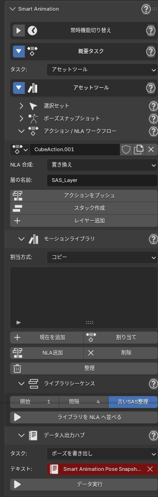
| 表示 | 働き |
|---|---|
| アクションの欄 / アクション作成 | 付けるアクションを選ぶか、新しく作ります。 |
| NLA 合成 | NLA へ送る時の重ね方（「置き換え」「合成」「加算」「減算」「乗算」）です。 |
| 層の名前 | 重ねる層のアクションに付ける名前です。 |
| アクションをプッシュ / スタック作成 / レイヤー追加 | 押すと、それぞれ、今のアクションを NLA へ送る、層の重なりを作る、動きの層を足す、を行います。 |
5-31. モーションライブラリ
くり返し使うアクションを一覧に保存し、物に付けたり NLA へ送ったりします。
場所「アセットツール」の中です。
| 表示 | 働き |
|---|---|
| 割当方式 | 元のアクションをそのまま付けるか（「リンク」）、複製して付けるか（「コピー」）を選びます。 |
| ライブラリの一覧 | 保存したアクションが並びます。 |
| 現在を追加 / 割り当て / NLA追加 / 削除 | 今のアクションを一覧に足す、選んだ物に付ける、NLA へ送る、一覧から外す、の 4 つです。 |
| 整理 | 押すと、元のアクションが無くなった項目を一覧から消します。 |
5-32. ライブラリシーケンス
モーションライブラリのアクションを、NLA に順番に並べます。
場所「モーションライブラリ」の中の見出しです。
| 表示 | 働き |
|---|---|
| 開始 / 間隔 | 並べ始めるフレームと、帯と帯の間のコマ数です。 |
| 古いSAS整理 | 前にこの道具で並べたトラックを消してから並べます。 |
| ライブラリを NLA へ並べる | 押すと、一覧のアクションを順に NLA の帯にして並べます。 |
5-33. データ入出力ハブ
ポーズ、選択セット、モーションライブラリ、ボーンの対応表を、Blender のテキストデータに書き出したり、そこから読み込んだりします。
場所「アセットツール」の中です。
| 表示 | 働き |
|---|---|
| タスク | 「ポーズを書き出し」「ポーズを読み込み」「選択セットを書き出し」「選択セットを読み込み」「ライブラリを書き出し」「ライブラリを読み込み」「ライブラリ整理」「ボーンマップを書き出し」「ボーンマップを読み込み」から選びます。 |
| テキスト | 書き出し先・読み込み元のテキストデータの名前です。その名前のテキストデータがまだ無い時は、欄が赤く表示されます（書き出すと、その名前で作られます）。「ライブラリ整理」の時は出ません。 |
| データ実行 | 押すと、選んだタスクを実行します。 |
5-34. 転送ツール
別のリグへ動きを写す（リターゲット）ための見出しです。
場所「概要タスク」で「全機能」か「転送ツール」を選ぶと出ます。
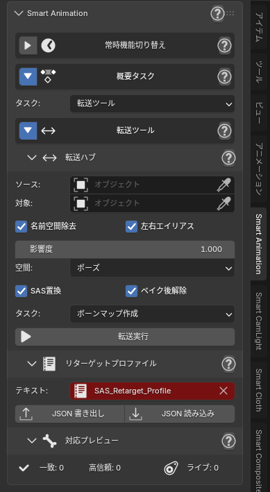
| 表示 | 働き |
|---|---|
| 中の見出し | 「転送ハブ」「リターゲットプロファイル」「対応プレビュー」が並びます。 |
5-35. 転送ハブ
リターゲットと、ルートモーション（キャラクター全体の移動）の処理を行う中心の欄です。
場所「転送ツール」の中です。
| 表示 | 働き |
|---|---|
| ソース / 対象 | 動きの元と、写す先のアーマチュアです。 |
| 名前空間除去 / 左右エイリアス | 骨の名前の頭の「CharacterA:」のような部分を無視するかと、.L・_R・Left・Right などの左右の書き方を同じと見なすかです。 |
| 影響度 / 空間 | 写す強さと、どの座標で写すかです。 |
| SAS置換 / ベイク後解除 | 前に作った仮のつなぎを消してから作るかと、ベイクの後につなぎを外すかです。 |
| タスク | 「ボーンマップ作成」「再構築 + ライブ」「現在のマップを適用」「プレビュー更新」「プレビューをベイク」「プレビュー解除」「ルートモーション抽出」「インプレース作成」から選びます。 |
| ルートボーン / X / Y / Z | 「ルートモーション抽出」「インプレース作成」の時だけ出ます。全体の移動を持つ骨と、使う軸です。下に、一致したカーブの数が出ます。 |
| 転送実行 | 押すと、選んだタスクを実行します。 |
実例別のリグへ動きを写し、普通のキーにする（左が元のリグ、右が写す先のリグ（骨の長さと名前の頭が違います）で試した様子）
骨の長さや名前の頭が違うリグへ、動きを写します。まず仮のつなぎで写して確かめ、よければキーに焼き付けます。
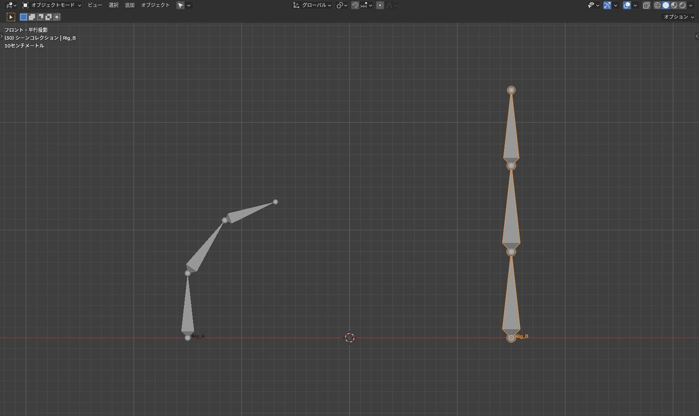
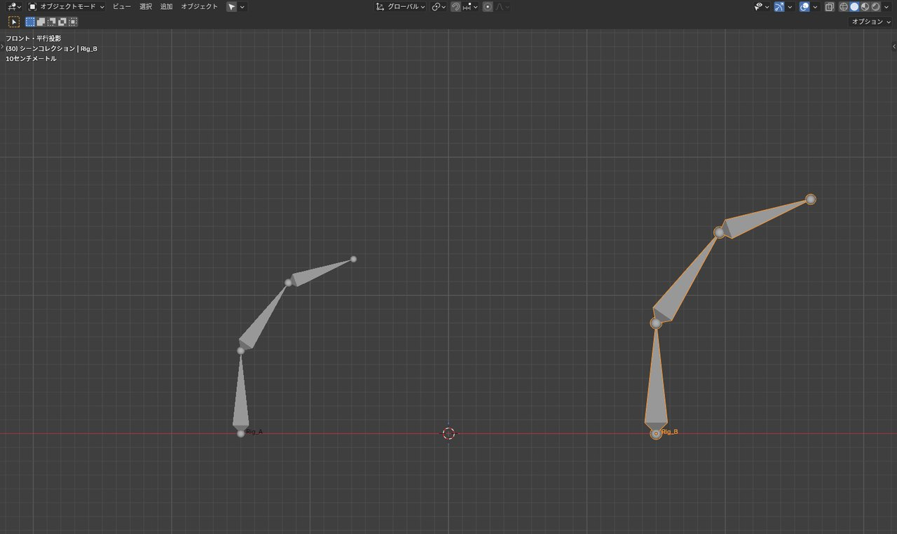
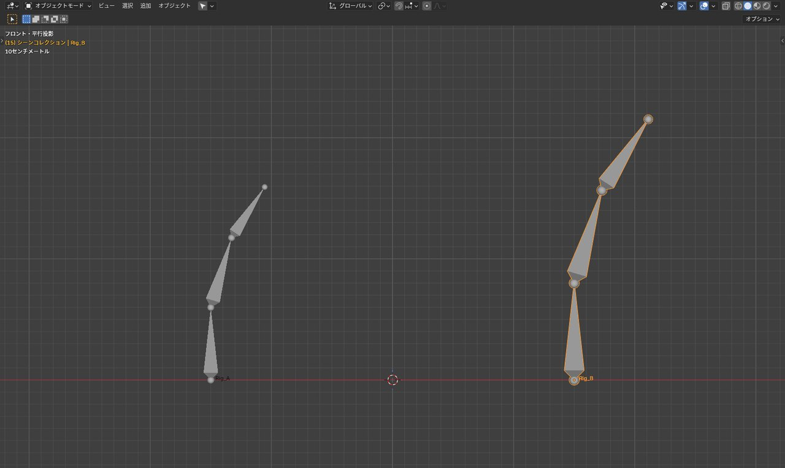
- 「転送ハブ」の「ソース」に元のリグ、「対象」に写す先のリグを選びます。
- 「タスク」を「ボーンマップ作成」にして「転送実行」を押します。
- 「タスク」を「再構築 + ライブ」にして「転送実行」を押します。写す先が同じように動くのを確かめます。
- 「タスク」を「プレビューをベイク」にして「転送実行」を押します。
見どころ：前は右のリグがまっすぐのままです。「再構築 + ライブ」で、左と同じように曲がります。ベイクの後は仮のつなぎが外れ、右のリグにも普通のキーが入るので、途中のフレームでも左と同じ動きをします。
5-36. リターゲットプロファイル
ボーンの対応表を、テキストデータに JSON（データの書き方の 1 つ）で保存したり、読み込んだりします。
場所「転送ツール」の中です。
| 表示 | 働き |
|---|---|
| テキスト | 使うテキストデータの名前です。その名前のテキストデータがまだ無い時は、欄が赤く表示されます。 |
| JSON 書き出し / JSON 読み込み | 対応表を書き出します。または、保存した対応表を読み込みます。 |
5-37. 対応プレビュー
元のリグと写す先のリグで、骨の対応がどれだけ取れているかを見ます。
場所「転送ツール」の中です。
| 表示 | 働き |
|---|---|
| 一致 / 高信頼 / ライブ | 対応が取れた骨の数、確かな対応の数、仮の写しの数です。 |
| 対応の一覧 | 対応表がある時に、骨の組が並びます。 |
5-38. 移植済み同梱ツール
このアドオンに同梱している、ほかのアニメーション用ツールの見出しです。起動を軽くするため、「ツールを読み込む」を押すまでは中身を読み込みません。
場所「概要タスク」で「全機能」を選ぶと、いちばん下に出ます。「タスク」で同梱ツールのまとまり（「ポーズ」など）を選ぶと、そのまとまりの見出しだけが出ます。
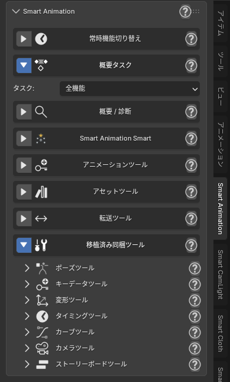
| 表示 | 働き |
|---|---|
| ポーズツール | Ani Offset、Sakura PoseLib（ポーズ集、ポーズのスライダーなど）です。 ポーズプレビューは Enter または左クリックで確定し、Esc または右クリックで開始前のポーズに戻します。 |
| キーデータツール | AnimAll（メッシュ・カーブ・UV・属性など、細かいデータへのキー）です。 |
| 変形ツール | Animation Transform Offset（動きの付いた物をマウスで動かすと、動かした分をすべてのキーへ反映する）です。 |
| タイミングツール | EaseIt（グラフエディターのキーの間を、ボタン 1 つで決まったカーブにする）、「ストップモーション風アニメーター」（なめらかな動きをコマ送りにする）です。 |
| カーブツール | 「ベジェカーブエディター オーバーレイ」、Simplify Curves+（カーブや F カーブの点を減らす）です。 |
| カメラツール | Camera Shakify（カメラの揺れ）です。読み込んだ後にカメラを選ぶと、サイドバーの「Smart Animation」タブに「Camera Shakify」のパネルが出ます。一覧の「＋」で揺れを足し、「シェイク」（揺れの種類）・「影響度」・「スケール」・「速度」を変えます。パネルの下の「Misc Utilities」（英字のまま出ます）を開くと、2 つの道具があります。「全カメラシェイクを修復」は、シーンのカメラの揺れを全部組み直します（オブジェクトモードの時だけ押せます）。揺れがおかしい時に使います。「レンダーファーム用に準備」は、このアドオンが入っていないパソコンでも揺れが動くよう、自動で実行される台本をファイルに足します。1 つのファイルに 1 回押せば足ります。 |
| ストーリーボードツール | Storytools（Grease Pencil、カメラ、マップ、絵コンテのページ作りなどの道具）です。 |
| ツールを読み込む | 各ツールの見出しを開くと出ます。押すと、そのツールが使えるようになり、「状態」「パネル」「コマンド」の数と、「クイックアクセス」「オペレーター」「実行時プロパティ」などの見出しが出ます。 |
実例EaseIt で、動き出しだけをゆっくりにする（キー 2 つの立方体（グラフエディター）で試した様子）
同梱ツールの EaseIt は、選んだキーの間のカーブを、ボタン 1 つで決まった形にします。
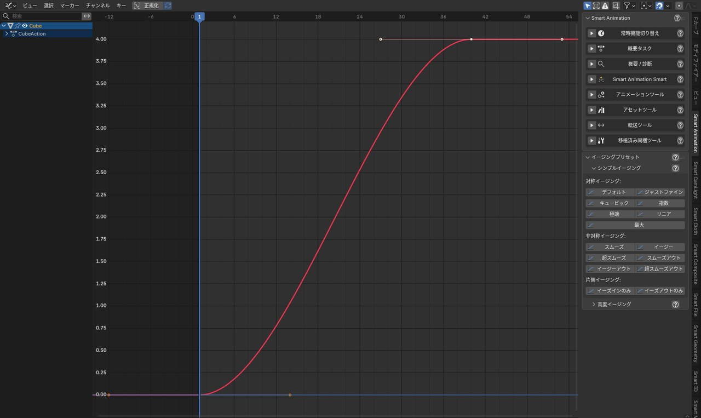
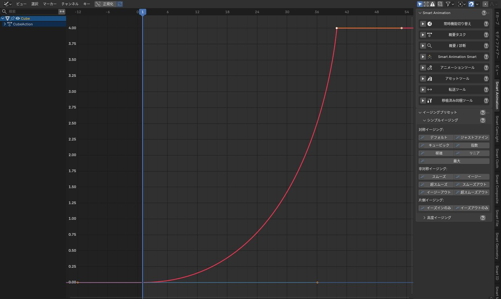
- キー 2 つの物を選び、グラフエディターを開きます。
- 「移植済み同梱ツール」の「タイミングツール」で EaseIt の見出しを開き、「ツールを読み込む」を押します。
- グラフエディターのサイドバーの Smart Animation タブで、「イージングプリセット」の「シンプルイージング」を開きます。
- グラフエディターでキーを 2 つとも選び、「イーズアウトのみ」を押します。
見どころ：前は、ゆっくり始まってゆっくり止まる S 字の線です。後は、ゆっくり動き出してだんだん速くなり、最後は速いまま止まる線になります。キーの位置そのものは動きません。
実例なめらかな動きを、コマ送りの動きにする（毎フレームにキーのある立方体（グラフエディター）で試した様子）
同梱ツールの「ストップモーション風アニメーター」は、決めたコマ数ごとにキーを残し、間を止めます。人形アニメのような動きになります。
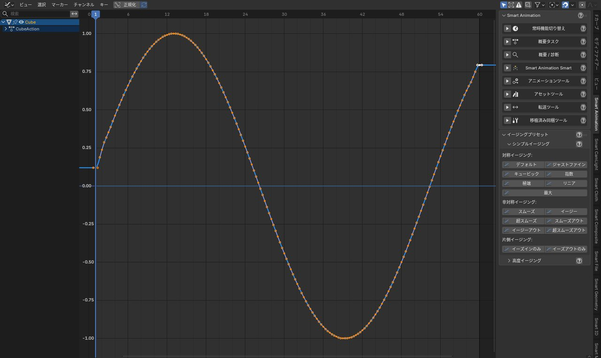
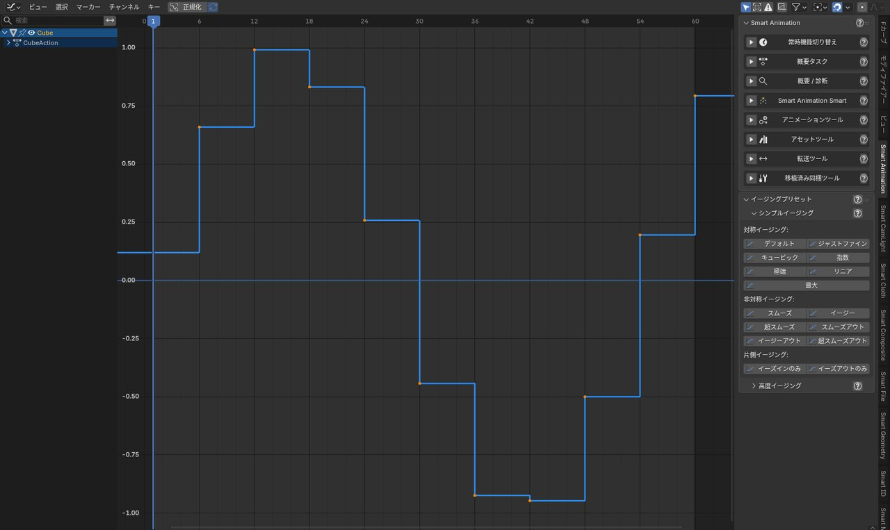
- 毎フレームにキーのある物を選びます。
- 「タイミングツール」で「ストップモーション風アニメーター」の見出しを開き、「ツールを読み込む」を押します。
- 読み込むと出る「実行時プロパティ」の見出しを開き、「ステップ」を 6 にします。
- 「クイックアクセス」の「ストップモーションを適用」を押します。
見どころ：なめらかだった線が階段の形になります。キーの点は 6 コマごとに減り、その間の値は止まったままです。
実例Storytools で、絵コンテのページを作る（何も無いシーンで試した様子）
同梱ツールの Storytools は、絵コンテ用の道具です。「固定のストーリーボードページを作成」で、コマの枠が並んだページを Grease Pencil で作ります。


- 「移植済み同梱ツール」の「ストーリーボードツール」で Storytools の見出しを開き、「ツールを読み込む」を押します。
- 出てきた「オペレーター」の見出しを開きます。
- 「固定のストーリーボードページを作成」を押します。
見どころ：何も無かった画面に、コマの枠が縦に並んだ絵コンテのページができます。ページを写すカメラも一緒に作られます。枠の中に Grease Pencil で絵を描いていけます。
6. よく使う手順
キーの間に中割りを作る
2 つのポーズの間に、自然な中間のポーズを作ります。
- 動きを付けた物（またはアーマチュアのポーズモード）を選びます。
- キーとキーの間のフレームに、再生ヘッドを置きます。
- 「アニメーション レシピ」→「モーションディレクター」を開きます。
- 「モード」を「トゥイーンのみ」にし、「トゥイーン」の値を決めます（0.5 でちょうど中間です）。
- 「モーション調整実行」を押します。
結果：今のフレームに、前後のキーから作った中割りのキーが入ります。
今のポーズを控えて、後で戻す
うまくできたポーズを失わないように控えておきます。
- アーマチュアを選び、ポーズモードにします。
- 「アセットツール」→「ポーズスナップショット」を開きます。
- 「新規名」に名前を入れ、「保存」を押します。
- ポーズを変えた後で戻したい時は、一覧から控えを選び「適用」を押します。
- 少しだけ近づけたい時は「ブレンド」の値を下げて「スナップショットブレンド」を押します。
結果：控えたポーズに戻せます。
密なキーを安全に整理する
ベイクなどで増えすぎたキーを減らします。
- 「概要 / 診断」で「自動バックアップ」が有効なことを確かめます。
- 「アニメーションツール」→「整理ハブ」を開き、「タスク」を「整理プレビュー」にします。
- 上に出る「整理プレビュー」の見出しを開き、減るキーの数を見ます。
- 「タスク」を「カーブ簡略化」などにし、「プレビューのみ」が無効なことを確かめて「整理実行」を押します。
結果：キーが減ります。元のアクションは控えとして複製されています。
別のリグへ動きを写す
あるキャラクターの動きを、骨組みの違う別のキャラクターに写します。
- 「転送ツール」→「転送ハブ」で、「ソース」に元のアーマチュア、「対象」に写す先のアーマチュアを選びます。
- 「タスク」を「ボーンマップ作成」にし、「転送実行」を押します。
- 「対応プレビュー」で、対応が取れていない骨がないか確かめます。
- 「タスク」を「再構築 + ライブ」にして「転送実行」を押し、写す先の動きを再生して確かめます。
- よければ「タスク」を「プレビューをベイク」にして「転送実行」を押します。
結果：写す先のリグに、普通のキーとして動きが入ります。
同梱ツールを使う
Sakura PoseLib などの同梱ツールを呼び出します。
- 「概要タスク」の「タスク」を「全機能」にします。
- いちばん下の「移植済み同梱ツール」を開き、使いたいツールのまとまり（例：「ポーズツール」）を開きます。
- ツール名の見出しを開き、「ツールを読み込む」を押します。
- 出てきたコマンドや設定から操作します。
結果：そのツールのコマンドと設定が、SmartAnimation Suite のパネルの中に出ます。
7. 困った時
- 「Smart Animation」のタブが出ません。
- サイドバーの開き方は、全体仕様書の該当の章を見てください。Smart Tools Manager を入れている時は、その置き場所の設定でタブを出すエディターが決まります。
- 見出しを開いても中身が少ししか出ません。
- 「概要タスク」の「タスク」で、1 つのまとまりだけを選んでいる可能性があります。「全機能」にすると、すべての見出しが出ます。
- 「アニメーション レシピ」の中に、スタジオ以外の見出しが出ません。
- 「UI密度」が「コンパクト」になっています。「バランス」か「スタジオ」にするか、「詳細操作」を有効にしてください。
- 同梱ツールの見出しを開いても、ボタンが出ません。
- 同梱ツールは、読み込むまで中身が出ません。ツールの見出しの中の「ツールを読み込む」を押してください。
- 整理でキーが消えすぎないか心配です。
- 「プレビューのみ」を有効にすると、データを変えずに変わる量だけを知らせます。「自動バックアップ」が有効なら、整理の前にアクションの控えが作られます。
- パネルの開き方や設定が、次に開いた時も残っています。
- この欄の設定は、Blender を起動し直しても残るように保存されます。「常時機能切り替え」の「Nパネル状態保存」が「有効」だと変えたその場で、「無効」だとシーンを閉じる時かプリファレンスを保存した時に保存されます。
- 各見出しの詳しい説明はどこで見られますか。
- 見出しの右の「？」を押すと、その見出しの説明が出ます。共通の使い方は全体仕様書の該当の章を見てください。
アドオンが出ない・日本語にならない、など全部のアドオンに共通のことは、全体仕様書の「困った時」を見てください。
8. 用語集
- キーフレーム（キー）
- あるフレームでの位置や回転などの値を記録した点です。キーとキーの間は自動でつながります。
- F カーブ
- キーの値の変化を線で表した物です。グラフエディターで見られます。
- アクション
- 1 つの動きのキーをまとめたデータです。
- NLA
- アクションを帯（ストリップ）にして、並べたり重ねたりする仕組みです。
- ベイク
- 計算や仮のつなぎで作った動きを、普通のキーに焼き付けることです。
- 中割り（トゥイーン）
- 2 つのポーズの間に入れる、中間のポーズです。
- リターゲット
- あるリグの動きを、別のリグへ写すことです。
- ボーンマップ（ボーンの対応表）
- 元のリグの骨と、写す先のリグの骨の組み合わせの表です。
- 接地
- 足などが床に着いて止まっている状態です。
- オイラーフィルター
- 回転のカーブが急に 1 回転分跳ぶずれを直す処理です。
- シェイプキー
- メッシュの形の違いを記録した物です。表情などに使います。
- ドライバー
- ある値を、別の値の動きに合わせて自動で動かす仕組みです。
- ポーズモード
- アーマチュアの骨を動かしてポーズを付けるモードです。
- ゴースト
- 前後のフレームの姿を、残像のように重ねて表示する補助です。
- モーションパス
- 物や骨が動く道筋を、線で表示する補助です。
- サイドバー（N パネル）
- エディターの右側に開く、タブ付きの設定の欄です。
9. 付録：版と確認値・できないこと
| アドオン | SmartAnimation Suite（smart_animation_suite） |
|---|---|
| 版 | 1.0.0 |
| ZIP | SmartAnimationSuite_1.0.0.zip |
| 大きさ | 1,105,580 バイト |
| SHA256 | 61ef4ebf18be584d519717b8f43f2debc5d5b91e535598b6b7fa7efec139e6d6 |
できないこと・注意
- このアドオンには、プリファレンスのアドオン設定の画面はありません。設定はすべてサイドバーのパネルで行います。
- 同梱ツールは、「ツールを読み込む」を押すまで中身（コマンドや設定）が出ません。
- 「アニメーション レシピ」の細かい見出しは、「UI密度」が「コンパクト」の時は「詳細操作」を有効にしないと出ません。
- 「整理プレビュー」は、アクションがある時だけ出ます。「現在の検出結果」は、問題があり「安全ヒント」が有効な時だけ出ます。
- Smart Tools Manager を入れている時は、タブを出すエディターがその置き場所の設定に従います。
- Animation Transform Offset の移動・回転・拡縮は、マウスで動かして確定する操作です。
SmartAnimation Suite 解説書 v1.0.0 ／ 2026-11-18 作成